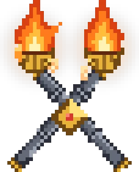

Feed the forge, then bring friends - the official server waits.

Forge 1.20.1. Allocate 10-12 GB of RAM - the pack ships its recommended amount and warns you below 8 GB. Java 17 is bundled by CurseForge. A dedicated GPU is recommended for shaders. First launch compiles everything - give it a minute, once.
CurseForge app → right-click the pack → Settings → Java Arguments, then paste the tuned G1 flags - smoother chunk loading, no GC stutter. One-click copy page here.
Built for co-op: revive fallen allies, crew a warship into battle, bring a titan down together. The server link on the CurseForge page gets you 25% off hosting and funds the next act. The Discord is where help, patch notes and other players live: join here.